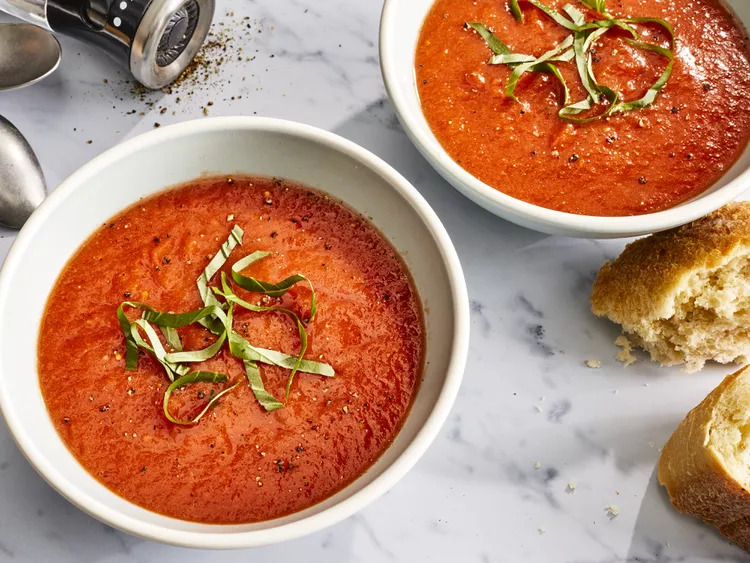

Fresh Tomato Soup

Description
This tomato soup recipe is simple, quick, and perfect to make when tomatoes are ripe in gardens and farmers' markets for a delicious summertime treat. (Source: allrecipes.com)
Ingredients
- 4 cups chopped fresh tomatoes
- 2 cups chicken broth
- 4 cloves garlic
- 1 large slice of onion
- 2 tablespoons butter
- 2 tablespoons all-purpose flour
- 2 teaspoons white sugar, or to taste
- 1 teaspoon salt, or to taste
Steps
- Step 1: Gather all ingredients.
- Step 2: Combine tomatoes, chicken broth, garlic cloves, and a large slice of onion in a stockpot over medium heat. Bring to a boil, and gently simmer for about 20 minutes to blend flavors.
- Step 3: Remove from heat and run the mixture through a food mill into a large bowl, or pan. Discard any stuff left over in the food mill.
- Step 4: Melt butter over medium heat in the now empty stockpot. Stir in flour to make a roux by cooking, whisking constantly, until mixture turns medium brown.
- Step 5: Gradually whisk in a bit of the tomato mixture to prevent lumps from forming, then stir in the rest.
- Step 6: Season with sugar and salt to taste.
- Step 7: Serve hot and enjoy!
return home